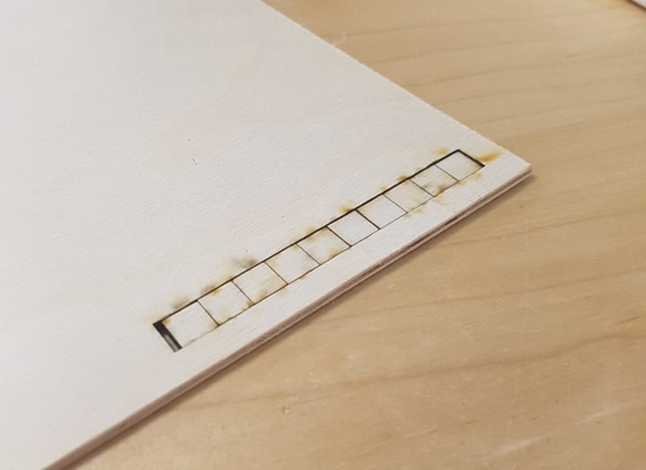

This is my second project: Creating a press fit model .
Here below I will go into details about how I designed my press fit model and how I used a laser cutter to carve out my design.
The first thing I did was seeking inspiration from google about fun press fit designs that I could build my design on. After some time, I found this book stand from Amazon and used that as an inspiration for my design.
The following programs were used to complete this project:
- Fusion 360
-Inkscape
-DXF for laser
In Fusion I started with creating a sketch for the support foot of my book stand. I drew the lines, so the foot was similar to the one of the book stand I found on Amazon. I then modified the parameters of the dimensions so the book stand could hold a book that was minimum 170mm(length) and maximum 35mm(thick). On the image below you can see the user parameters I used:

The following sketch was made and then extruded 4mm, the edges of the foot were smoothed out with the fillet command and then the body was copied to represent the other foot of the book stand:
Now all I needed was a support between the two bodies to complete my design. I got some help from a video on Youtube to execute this task. Now my design was completed in Fusion 360. Here you can see both the support and the complete design:
Measuring the kerf
Measuring the kerf was worked in a group. My groupmembers were Hrannar Þórarinsson, his website and Stefán Már Helgason, his website.
We went to fablab Reykjavík and in fusion 360 we drew a 100*10mm rectangle with cut-lines with 10mm intervals inside the rectangle. We sent that file to the laser cutter and ended up with the following:

After that we took one square out of the rectangular space and measured the empty space, that space was measuerd to be 12,08mm. Next we measured the square that we removed, that square was measured to be 9,8mm. In total there were 11 lasercuts done on the rectangle so to measure the kerf we used the formula (12,08-9,8)/11 = 0,207 which is our kerf.
Laser cutting
Next, I downloaded DXF for laser and Inkscape. I had to save each body in fusion under the create bar and selected “save DXF for laser cutting”, this generates a DXF file accounting for the kerf of laser cutting. The laser kerf my group measured was 0,207mm, as stated above. Next, I opened Inkscape and copied the DXF files into Inkscape. I used Inkscape to join selected nodes on the bodies. Then I set the line width to 0,02mm and exported the file as a PDF so the laser cutter would be able to read it.
Now the next step was to cut out my design and that took place at Fablab Reykjavík. The material I used was plywood. I used the laser cutting manual in Fablab to help me setup correctly before I started. It took the laser cutter few minutes to carve out my design and here is what it looks like put together:
The final test was to try out my new book stand and on the images below you can see it in action.
Time log
| TASK: | TIME: |
| Finding inspiration | 2 hours |
| Completing design in Fusion | 10 hours |
| Measuring kerf | 1 hour |
| Using and studying DXF for laser to add kerf | 2 hours |
| Using and studying Inkscape to prepare design for laser cutting | 3 hours |
| Laser cutting and assembling | 15 minutes |
| Documentation | 2 hours |
| TOTAL = 20 hours and 15 minutes |